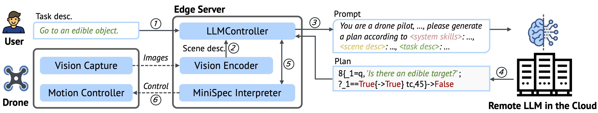
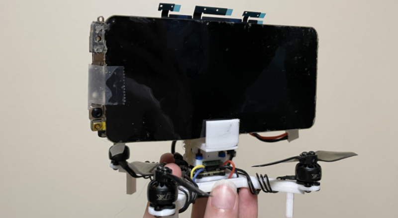
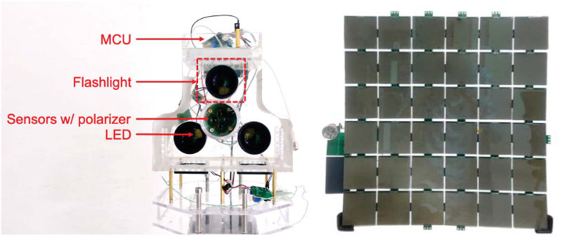

TypeFly is a robot control and planning system, leveraging the power of large language model (LLM) to generate a robot task plan according to user's natural language instruction and the scene.
[ project website ]
POD is a new way to achieve hands-free, eyes-up mobile computing. Unlike existing drone-carried user interfaces, POD features a smartphone-sized display and the computing and sensing power of a modern smartphone.
[ demo video ]
Conventional road signs convey very concise and static visual information to human drivers, and bear retroreflective coating for better visibility at night. RetroI2V exploits the retroreflective coating of road signs and establishes visible light backscattering communication (VLBC), and further coordinates multiple concurrent VLBC sessions among road signs and approaching vehicles.
I like cooking, graphic design, photography, and video production. I used to make some promotional videos and posters for academic papers, events and animes.